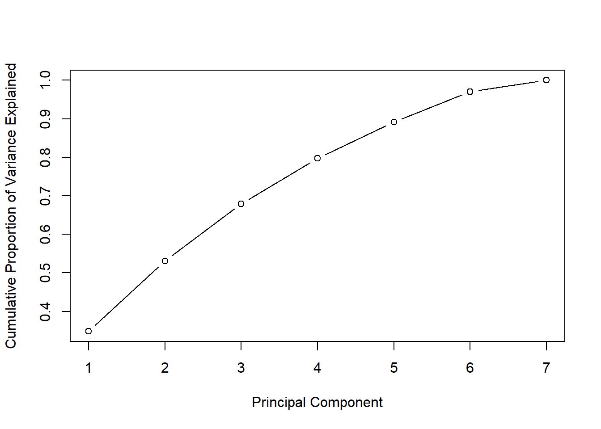
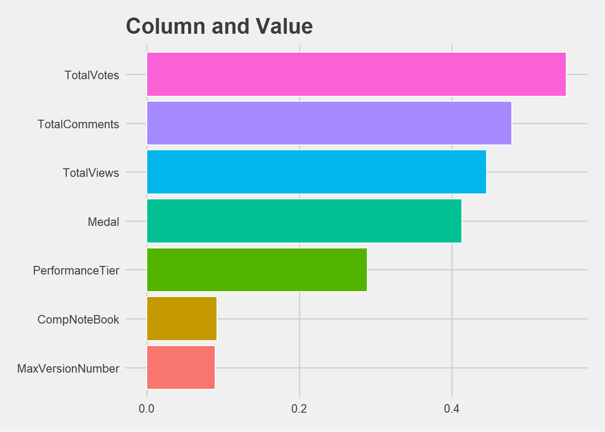

Chapter 11 Principal Components
We did a PCA on the dataset involving Total Votes , Total Views , Total Comments , Medal and whether it is a Competition Notebook or not.
The 1st , 2nd Principal Components explain more than 50% of the information
kvcs_versions_info = kvcs_versions_info %>%
mutate(CompNoteBook = ifelse(is.na(SourceCompetitionId),0,1))
kvcs_reduced = kvcs_versions_info %>%
select("TotalViews","TotalComments","TotalVotes","CompNoteBook","Medal", "MaxVersionNumber","PerformanceTier")
kvcs_reduced[is.na(kvcs_reduced)] <- 0
kvcsPCA <- prcomp(kvcs_reduced, center = TRUE,scale. = TRUE)
std_dev <- kvcsPCA$sdev
pr_var <- std_dev^2
prop_varex <- pr_var/sum(pr_var)
summary(kvcsPCA) ## Importance of components:
## PC1 PC2 PC3 PC4 PC5 PC6 PC7
## Standard deviation 1.5617 1.1303 1.0202 0.9095 0.80964 0.74325 0.45574
## Proportion of Variance 0.3484 0.1825 0.1487 0.1182 0.09365 0.07892 0.02967
## Cumulative Proportion 0.3484 0.5309 0.6796 0.7978 0.89141 0.97033 1.00000plot(cumsum(prop_varex), xlab = "Principal Component",
ylab = "Cumulative Proportion of Variance Explained",
type = "b")
For the First Principal Component , Total Votes , Total Comments , Total Views and Medal contributes the most . The first Principal Component explains 34% of the information
For the Second Principal Component , Performance Tier, Total Views and Whether the Notebook is a Competition Notebook or not contributes the most
11.1 Principal Component 1
showPC <- function(PCNumber) {
kvcsPCA %>%
tidy(matrix = "rotation") %>%
filter(PC == PCNumber) %>%
arrange(desc(abs(value))) %>%
mutate(column = reorder(column,abs(value))) %>%
ggplot(aes(x = column,y = abs(value), fill = factor(column))) +
geom_bar(stat='identity',colour="white") +
labs(x = 'Column',
y = 'Value',
title = 'Column and Value') +
coord_flip() +
theme_fivethirtyeight() +
theme(legend.position = "none")
}
showPC(1)